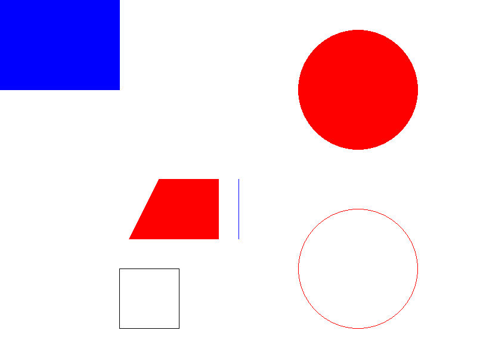

關於 <<
Previous Next >> w7
w6
// https://en.wikipedia.org/wiki/Flag_of_thcp2023.a0968899313.repl.coe_Republic_of_China
// cc roc_flag.c -lgd -lm 連接gd與數學庫
// https://www.rapidtables.com/ web/ color/RGB_Color.html
// 幾何形狀著色與繪圖練習
//以下gd繪畫教學嘗試類似的中華民國國旗，請根據以下計劃內容完成後續的國旗綁定
#include <stdio.h>
#include <gd.h >
#包括 <math.h>
voiddraw_roc_flag（gdImagePtr img）；
void draw_white_sun(gdImagePtr img, int x, int y, int size, int color);
int main() {
// 寬度 3: 高度 2
int width = 1200;
int 高度 = (int)(寬度*2.0 / 3.0);
gdImagePtr img = gdImageCreateTrueColor(寬度, 高度);
gdImageAlphaBlending(img, 0);
鄰近_roc_flag（img）；
FILE *outputFile = fopen("./../images/roc_flag.png", "wb");
if (outputFile == NULL) {
fprintf(stderr, "開啟輸出檔時發生錯誤。\n");
回傳1；
gdImagePngEx
(img, 輸出檔, 9);
fclose(輸出檔);
gdImageDestroy(img);
回傳0；
}
drawroVinc_flag（gdImagePtr img）{
int寬度= gdImageSX（img）;
int 高度 = gdImageSY(img);
int 紅、白、藍；
int center_x = (int)(寬度/4);
int center_y = (int)(高度/4);
int sun_radius = (int)(寬度/8);
// 標誌的顏色
red = gdImageColorAllocate(img, 242, 0, 0); //
紅白 = gdImageColorAllocate(img, 255, 255, 255); // 白色條紋
藍色 = gdImageColorAllocate(img, 0, 41, 204); // 藍色
// 紅色自訂區域
gdImageFilledRectangle(img, 0, 0, width, height, red);
// 藍色區域
gdImageFilledRectangle(img, 0, 0, (int)(width/2.0), (int)(height/2.0), blue);
// 目前只出青天白日的直線，請嘗試計算所需的點座標完成國旗繪圖
draw_white_sun(img, center_x, center_y, sun_radius, White);
}
void draw_white_sun(gdImagePtr img, int center_x, int center_y, int sun_radius, int color) {
浮動角度 = 0;
int fromX, fromY;
int toX, toY;
for (int i=0; i<24; i++){
角度 += 5*M_PI*2/12;
//printf("%.3f", 角度);
toX = center_x + cos(角度)*sun_radius;
toY = center_y + sin(角度)*sun_radius;
// 允許i為0時移動到toX, toY，其餘都進行直線起重機
if (i!=0){
gdImageLine(img, fromX, fromY, toX, toY, color);
}
從X = 到X;
從Y = 到Y;
}
}

// https://en.wikipedia.org/wiki/Flag_of_thcp2023.a0968899313.repl.coe_Republic_of_China
// cc roc_flag.c -lgd -lm 連接gd與數學庫
// https://www.rapidtables.com/ web/ color/RGB_Color.html
// 幾何形狀著色與繪圖練習
//以下gd繪畫教學嘗試類似的中華民國國旗，請根據以下計劃內容完成後續的國旗綁定
#include <stdio.h>
#include <gd.h >
#包括 <math.h>
voiddraw_roc_flag（gdImagePtr img）；
void draw_white_sun(gdImagePtr img, int x, int y, int size, int color);
int main() {
// 寬度 3: 高度 2
int width = 1200;
int 高度 = (int)(寬度*2.0 / 3.0);
gdImagePtr img = gdImageCreateTrueColor(寬度, 高度);
gdImageAlphaBlending(img, 0);
鄰近_roc_flag（img）；
FILE *outputFile = fopen("./../images/roc_flag.png", "wb");
if (outputFile == NULL) {
fprintf(stderr, "開啟輸出檔時發生錯誤。\n");
回傳1；
gdImagePngEx
(img, 輸出檔, 9);
fclose(輸出檔);
gdImageDestroy(img);
回傳0；
}
drawroVinc_flag（gdImagePtr img）{
int寬度= gdImageSX（img）;
int 高度 = gdImageSY(img);
int 紅、白、藍；
int center_x = (int)(寬度/4);
int center_y = (int)(高度/4);
int sun_radius = (int)(寬度/8);
// 標誌的顏色
red = gdImageColorAllocate(img, 242, 0, 0); //
紅白 = gdImageColorAllocate(img, 255, 255, 255); // 白色條紋
藍色 = gdImageColorAllocate(img, 0, 41, 204); // 藍色
// 紅色自訂區域
gdImageFilledRectangle(img, 0, 0, width, height, red);
// 藍色區域
gdImageFilledRectangle(img, 0, 0, (int)(width/2.0), (int)(height/2.0), blue);
// 目前只出青天白日的直線，請嘗試計算所需的點座標完成國旗繪圖
draw_white_sun(img, center_x, center_y, sun_radius, White);
}
void draw_white_sun(gdImagePtr img, int center_x, int center_y, int sun_radius, int color) {
浮動角度 = 0;
int fromX, fromY;
int toX, toY;
for (int i=0; i<24; i++){
角度 += 5*M_PI*2/12;
//printf("%.3f", 角度);
toX = center_x + cos(角度)*sun_radius;
toY = center_y + sin(角度)*sun_radius;
// 允許i為0時移動到toX, toY，其餘都進行直線起重機
if (i!=0){
gdImageLine(img, fromX, fromY, toX, toY, color);
}
從X = 到X;
從Y = 到Y;
}
}

// 包含標準輸出入程式庫的標頭檔
// https://blog.csdn.net/weixin_38468077/article/details/101069365
// http://www.gnuplot.info/demo/
// https:/ /https:// /https:// /https:///github.com/sysprog21/rv32emu
// https://github.com/sysprog21/semu
// https://docs.google.com/presentation/ d/14N0cWG2SnBSqhc2cLF0_2VerB9FF8JN3
// https://cs61c .org/fa23/
// https://greenteapress.com/wp/think-python-2e/
// https://github.com/ecalvadi/c99-examples
// https://github .com/gouravthakur39/初學者-C-program -examples
// https://github.com/ergenekonyigit/Numerical-Analysis-Examples
// https://www.che.ncku.edu.tw /facultyweb/changct/ html/teaching/CPPandMATLAB/ Past/pdf%20Files /Chap02-Ling.pdf
// https://gteceducation.com.com.com/Brochures/PROGRAMMING/C%20PROGRAMMING%20FULL.pdf
// https:/sg.pdf // https:/sg /jsommers.github。io/cbook/cbook. pdf
// https://jsomers.github.io/cbook/index.html
// http://student.itee.uq.edu.au/courses/csse2310/CProgrammingNotes.pdf
// http ://cslibrary.stanford .edu/101/ EssentialC.pdf
// https://publications.gbdirect.co.uk/c_book/
// https://www.fossil-scm.org/fossil-book/doc/ 2ndEdition/fossilbook.pdf
// **** * 在replit 執行
// cd 下載
// cc gnuplot_ex1.c -o gnuplot_ex1
// ./gnuplot_ex1
#include <stdio.h>
// 主函式
int main() {
//popen 啟動 Gnuplot 程式
FILE *gnuplotPipe = popen("gnuplot -persistent", "w");
if (!gnuplotPipe) {
fprintf(stderr, "啟動Gnuplot失敗。\n");
回傳1；
}
// 使用 Gnuplot 繪圖指令，指定字體並輸出為 PNG
fprintf(gnuplotPipe, "setterminal png font 'default,10' size 800,400\n");
fprintf(gnuplotPipe, "設定輸出 './../images/gnuplot_ex1.png'\n");
fprintf(gnuplotPipe, "強度 sin(x)");
// 關閉 popen
pclose(gnuplotPipe);
返回0；
}
#include <stdio.h>
#include <gd.h>
#include <math.h>
int main() {
int 寬度 = 800;
整數高度=600；
gdImagePtr img = gdImageCreateTrueColor(寬度, 高度);
gdImageAlphaBlending(img, 0);
FILE *outputFile = fopen("hellogd.png", "wb");
如果（輸出檔案== NULL）{
fprintf(stderr, "開啟輸出檔時發生錯誤。\n");
返回1；
}
int 紅色 = gdImageColorAllocate(img, 255, 0, 0);
int 藍色 = gdImageColorAllocate(img, 0, 0, 255);
int black = gdImageColorAllocate(img, 0, 0, 0);
int 白色 = gdImageColorAllocate(img, 255, 255, 255);
// 長方形塗色
gdImageFilledRectangle(img, 0, 0, width, height, white);
gdImageFilledRectangle(img, 0, 0, (int)width/4, (int)height/4, 藍色);
// 曲面形著色
gdImageFilledEllipse(img, (int)width*3/4, (int)height/4, (int)width/4, (int)width/4, red);
// 圓形畫線
gdImageEllipse(img, (int)width*3/4, (int)height*3/4, (int)width/4, (int)width/4, red);
// 畫直線
gdImageLine(img, (int)width/2, (int)height/2, (int)width/2, (int)height/2 + 100, blue);
// 施工畫線
gdPoint points[4];
點[0].x = (int)寬度/4;
點[0].y = (int)高度*3/4;
點[1].x = 點[ 0].x + 100；
點[1].y = 點[0].y；
點[2].x = 點[1].x；
點[2].y = 點[1].y + 100 ；
點[3].x = 點[2].x - 100；
點[3].y = 點[2].y;
gdImagePolygon(img, 點, 4, 黑色);
// 廈門著色
gdPointpoints2[4];
點2[0].x = (int)寬度/3;
點2[0].y = (int)高度/2;
點2[1].x =點2[ 0].x + 100；
點2[1].y = 點2[0].y;
點2[2].x = 點2[1].x;
點2[2].y = 點2[ 1].y + 100；
點2[3].x = 點2[2].x - 150；
點2[3].y = 點2[2].y;
gdImageFilledPolygon(img, 點2, 4, 紅色);
gdImagePngEx(img, 輸出檔, 9);
fclose(輸出檔);
gdImageDestroy(img);
回傳0；
}
關於 <<
Previous Next >> w7